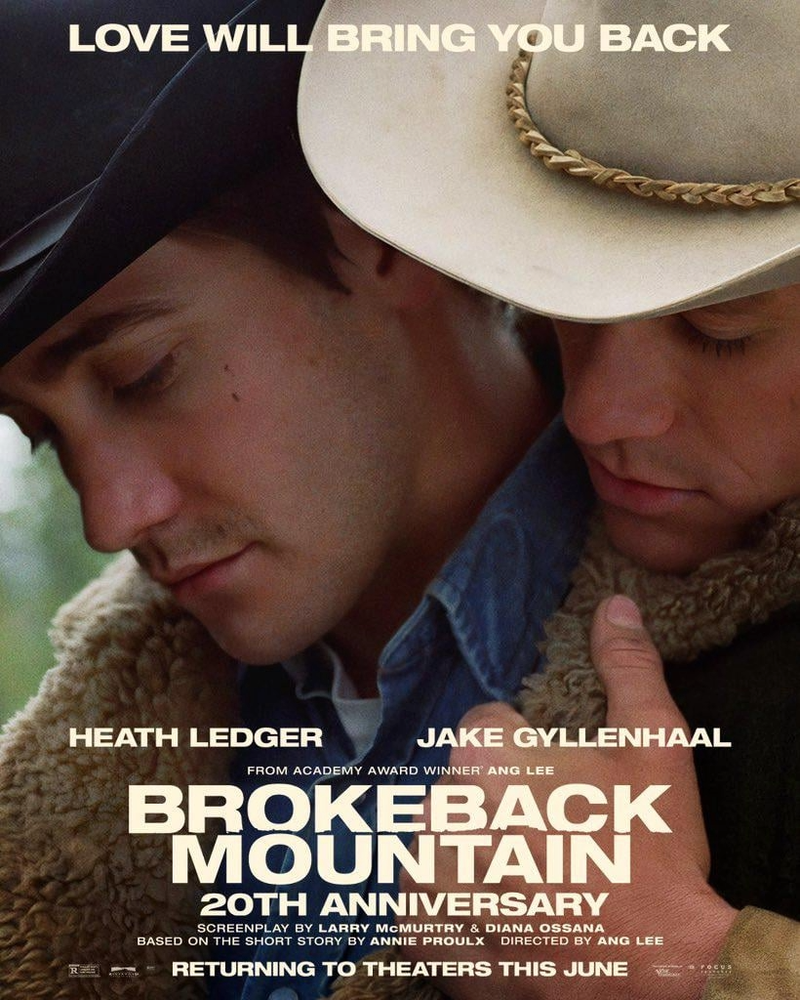

In 1963, rodeo cowboy Jack Twist and ranch hand Ennis Del Mar are hired by rancher Joe Aguirre as sheep herders in Wyoming. One night on Brokeback Mountain, Jack makes a drunken pass at Ennis that is eventually reciprocated. Though Ennis marries his longtime sweetheart, Alma and Jack marries a fellow rodeo riders, the two men keep up their tortured and sporadic affair over the course of 20 years.
